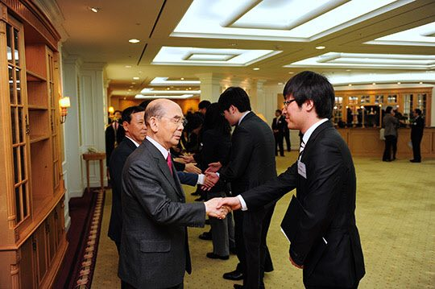
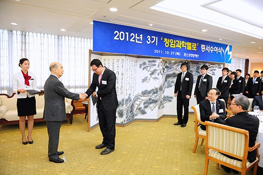

연재일 2015-06-30출처 조선일보 프리미엄조선 연재
포항에서 포철 초창기 현장 직원들과 아쉽지만 포근한 재회를 마친 청암(靑巖) 박태준은 고향으로 돌아가 며칠을 더 묵고 서울로 돌아갔다. 크고 작은 일정들이 기다리고 있었다. 그는 빠짐없이 참석했다. 그러나 기침에 시달려야 했다. 가을이 깊어갈수록 그의 기침은 더 심각해지고 있었다. 2011년 10월 27일 오전, 그는 오랜만에 서울 대치동 포스코센터를 찾았다.
일찍이 이십여 년 전 손수 기획하고 결정했으나 김영삼이 대통령에 취임한 것과 거의 동시에 해외유랑을 떠나야 했기에 정작 자신은 한 시간도 근무해보지 못한 빌딩이다. 차에서 내리는 노인을 포스코 최고경영진이 정중히 맞았다.
포스코청암재단이 3기 청암과학펠로들에게 연구지원금 증서를 수여하는 식장에는 학문별 선발위원장인 오세정 서울대 교수, 노혜정 서울대 교수, 김인묵 고려대 교수, 김병현 포스텍 교수를 비롯해 3기 펠로 30명, 2기 펠로 20명 등 60여 명이 이사장(박태준)을 기다리고 있었다.
청암과학펠로들을 격려하는 박태준 포스코 청암재단 이사장.
포스코청암재단이 한국에서 기초과학을 연구하는 젊고 유능한 세계적 수준의 인재들을 지원하기 위해 마련한 청암과학펠로십. 2009년부터 시행된 이 제도에는 한국 과학기술의 세계일류를 희원하고 한국인의 노벨과학상 수상을 염원하는 박태준의 의지와 정신이 투영돼 있다. 그는 한국 기초과학에 대한 관심을 한마디로 표명했다.
“철강산업이 국가 기간산업인 것처럼, 기초과학은 과학기술 발전의 기간(基幹)이다.”
청암과학펠로 선발 분야는 수학 물리학 화학 생명과학으로, 기초과학이다. 2011년부터는 박사과정 10명, Post―doc 10명, 신진교수급 10명 등 한 기에 30명을 선발하여, 박사과정 한 사람마다 연간 2500만원씩 3년간, Post―doc 한 사람마다 연간 3500만원씩 2년간, 신진교수급 한 사람마다 연간 3500만원씩 2년간 각각 지원한다. 매년 5월에 선발 공고를 하고, 8월부터 엄정한 심사를 해서, 10월 하순에 증서 수여식과 워크숍을 개최한다.
박태준 이사장이 청암과학펠로들에게 증서를 수여하고 있다.
2008년부터 포스코청암재단 이사장으로 봉사해온 박태준은 3기 증서 수여식에서 앞날이 촉망되는 젊은 과학자들과 만나 감회 어린 격려를 했다. “산업화에 매진한 우리 세대는 실용적인 과학기술을 우선시할 수밖에 없는 환경에서 뛰어야 했고, 그것이 효율성 측면에서 큰 장점을 발휘했지만, 장기적인 투자와 지원이 요구되는 기초과학을 제대로 육성하지 못하는 결과를 남겼으며, 아직도 그 영향이 잘못된 풍토”로 남아 있다는 미안한 마음을 밝히고, “자연의 신비를 탐구하고 그 속에 숨은 원리와 법칙을 찾아내는 과학자의 길이 부자가 되려는 길은 아니지만 인류사회의 고귀한 가치를 창조하는 길이니, 그 자부심, 그 사명감이 과학자의 인생에서 나침반이 되기”를 당부했다.
청암과학펠로들, 한국 기초과학의 미래를 짊어진 뛰어난 과학자들은 ‘기침 하는 노(老)철강왕’의 격려와 기대에 숙연한 표정을 지었다.
그 무렵, 박태준은 정계(政界)에서 깊은 인연을 맺었던 오랜 두 친구와 가을여행을 준비하고 있었다. 국회의장을 역임한 박준규, 국회의원을 지낸 고재청. 기간은 11월 3일부터 11일까지. 여행지는 일본 도쿄 근처의 아따미, 이즈반도, 요꼬하마. 아따미와 이즈반도는 그가 유년시절을 묻은 곳이었다.
소학교, 수영대회, 밀감, 두부, ‘조센징’이라 불린 차별에 대한 설움과 분개, 그리고 바지 같은 긴 장화를 신고 이즈반도 기차터널 공사장에서 일한 아버지…. 그러나 여행은 출발 당일 아침에 취소되고 말았다. 여행을 준비한 이의 갑작스런 건강악화, 정확히는 그 몹쓸 기침이 별안간 견디기 어려운 심통을 부려대는 것이었다.
<②편에서 계속>

